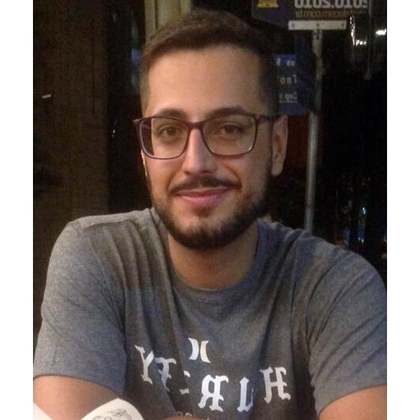

Sobre mim
Tenho desenvolvido habilidades técnicas e estou em contínuo aprendizado em desenvolvimento Mobile e Web , Frameworks, APIs, noções de Arquitetura de Sistemas, Git e Github e metodologias ágeis. Estou sempre buscando conhecimento dia a dia. Posso aprender rapidamente o que é necessário para o andamento do processo.
Acredito que sempre precisamos aprender, pensar fora da caixa e sair da zona de conforto. Gosto de empreendedorismo e buscar por inovação, acredito que faz parte do trajeto. Sou estimulado à desafio nas mais diversas áreas de tecnologia.